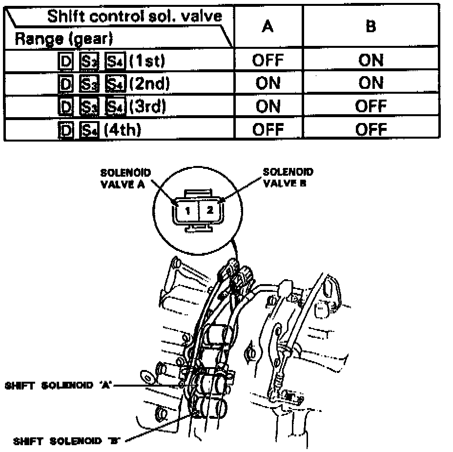

A/T - Computer Diagnosis
BULLETIN: # 064SUBJECT: Electrical Diagnosis
APPLICATION: Acura
DATE: August 1991
ACURA 4 SPEED COMPUTER SHIFTED TRANSAXLE DIAGNOSIS

If you have a computer shifted Acura with a shift complaint, eg. no upshift, stuck in 4th etc., you'll need to verify that the transaxle is capable of getting all four gears before taking the transaxle out of the car.
To do this you'll want to energize the shift solenoids with + 12V for each gear. Use the chart below to shift the transaxle.
If the transaxle shifts properly, the problem is not in the transaxle.
FOR ADDITIONAL INFORMATION
See September 1991 Bulletin # 068